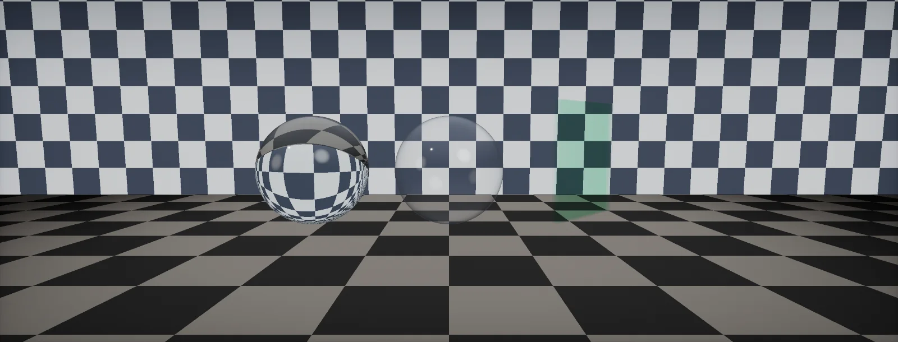

Glass
How glass reflects and bends light, why flat panes do not distort, how colour builds with thickness, how engines fake refraction with a screen copy, frosted and cheap glass, and sorting, built in Unity HDRP and Unreal.

Glass reflectance
Glass, water, plastic and gemstones are : their electrons are bound, so light passes into them instead of being absorbed at the surface as in metals. At the surface a part reflects, set by the IOR and the angle, and the rest enters.
What is specific to glass: a pane has two surfaces, so it reflects at both:
About 8 % of the light reflects off a window head-on and over 90 % goes through. That is why a window at night is a mirror: the 8 % of a bright room beats the 92 % of a dark street. At grazing angles the reflection takes over completely, which is what makes glass read as glass. A glass shader with the wrong Fresnel looks like plastic film.
Snell's law
Light that enters glass slows down and changes direction. gives the new angle: n₁ sin θ₁ = n₂ sin θ₂. A flat pane bends the ray on the way in and back on the way out by the same amount, so the light leaves parallel to how it came, only shifted sideways:
For a window (4 mm) the shift is about a millimetre: invisible. That is the most important practical fact about glass in games: flat panes do not distort. Distortion comes from curved or uneven surfaces: bottles, lenses, old wavy window glass, ripples on water. A shader that distorts a flat window is doing it for effect.
Going the other way, from glass into air, the angle grows, and beyond the critical angle (about 42° for glass) light cannot leave at all: total internal reflection. It makes the sides of a glass block look silvery and gemstones sparkle.
Glass shapes
What you see through glass depends on its shape more than on its IOR. A ball refracts twice through strongly curved surfaces, so it acts as a lens and turns the image upside down. A light bulb or a drinking glass is hollow: two thin walls, each almost a pane:
Real-time renderers cannot trace the actual shape (except with ray tracing), so they assume one. HDRP's refraction models are exactly these assumptions: Planar treats the surface as a slab of a given thickness (panes, hollow glasses, bottles), Sphere as a ball of that thickness (solid round objects), Thin as a very thin sheet. OpenPBR has the same split: geometry_thin_walled for objects made of thin shells, a closed volume otherwise.
Glass colour and thickness
Coloured glass does not have a colour on its surface. It absorbs some wavelengths a little per centimetre, and the colour builds up with the distance light travels inside. Window glass looks clear face-on and green at its edge, where light travels its full width:
In OpenPBR, a transmission_depth of 0 makes the colour a simple surface tint instead of an absorption.
For thin objects (bottles, panes), the path length is thickness / cos θ inside the glass, so the colour deepens at grazing views. Multiplying the background by a flat tint ignores that and makes glass look like a coloured film.
Screen-space refraction
A rasteriser does not know what is behind a pixel. So real-time refraction reads a copy of the frame rendered so far.
The glass shader estimates where the refracted ray would land on screen and reads the copy there:
Frosted and rough glass
Etched, sandblasted or dirty glass is rough on the inside of the light path too: light scatters as it passes, so the background blurs. Like rough reflections that read blurrier probe mips, rough refraction reads a blurrier mip of the screen copy. HDRP builds a mip chain of the colour buffer for this and maps roughness to a mip level:
Mips are blocky at high levels, so HDRP filters its pyramid with a Gaussian. Without a mip chain (URP, Unreal translucency) frosted glass needs several offset reads of the scene colour and averaging, which is the cost to keep in mind for large frosted panels.
Alpha-blended glass
Before screen copies, and still on low-end targets, glass was an alpha-blended surface with a reflection. The trap: plain alpha blending multiplies everything the glass draws by its opacity, including the reflection. Clear glass has a low opacity, so its reflection disappears. Premultiplied alpha fixes it: the surface adds its reflection at full strength and only the background is dimmed:
That is the whole trick behind convincing cheap glass: a low opacity, a bright reflection from a probe or a gradient scaled by Fresnel, and premultiplied blending (blend One, OneMinusSrcAlpha). HDRP exposes it as Preserve specular lighting. Add a slight tint by multiplying the background with a colour blend (Blend DstColor, Zero) in a second pass if you need coloured glass without a screen copy.
Sorting, double sides and dirt
Glass is transparent geometry, so it inherits the sorting problems of all transparency:
- Closed objects (a glass, a bottle) need their back faces drawn before their front faces. Engines offer a two-pass option (HDRP: Back Then Front Rendering); otherwise split the mesh into inner and outer parts.
- Glass behind glass: with screen-copy refraction the rear pane is not in the copy. Use alpha blending for the rear one, or accept it.
- Liquids in glasses: model the liquid surface slightly inside the glass wall, not touching it, so sorting has a clear order.
- Shadows: clear glass should cast little or no shadow; coloured glass a tinted one. Most engines need a setting or a separate shadow caster for this.
- Dirt and fingerprints: a roughness map with smudges sells glass more than any refraction. Opaque dirt goes into the alpha, so it sorts and lights like a surface.
Build it in Unity HDRP
HDRP's Lit shader implements this unit's model directly: a refraction model (Planar, Sphere or Thin) that sets the shape, an IOR, a thickness, and absorption as a transmittance colour reached at a distance, the same parameters as OpenPBR. Rough glass reads a blurrier mip of the colour pyramid. The files add the same maths for custom graphs. Written for Unity 6 with HDRP 17; Unity 2022 LTS works the same apart from a few renamed menu entries.
- Create a material with HDRP/Lit. Surface Options: Surface Type
Transparent, Rendering PassDefault(the Before Refraction pass would neither refract nor show up behind refractive objects). - Surface Inputs: Base Color white with a low alpha (clear glass 0.05–0.2; alpha is how much the surface blocks), Metallic 0, Smoothness 0.95–1. Under Surface Options, enable Preserve specular lighting so reflections stay at full strength however low the alpha is (the premultiplied idea of the cheap glass chapter).
- Transparency Inputs: Refraction Model
Planarfor panes, glasses and bottles (hollow, parallel walls),Spherefor solid rounded objects (a paperweight, a marble),Thinfor very thin sheets (fixed 5 mm). Index of Refraction 1.5 (crystal glass up to about 1.6). Refraction Thickness: the real wall thickness in metres, for example 0.004 for a window. - Colour: set Transmittance Color to the tint you want to reach after the Absorption Distance (for example light green at 0.1 m for window glass). Keep the colour below 1 in every channel. HDRP computes μ = −ln(colour) / distance, exactly the Beer–Lambert chapter.
- Frosted glass: lower Smoothness (0.3–0.7). HDRP reads the colour pyramid at mip = roughness1.3 · (mip count − 1). Add a smoothness map for patterns (etched letters, a clear stripe in frosted glass).
- Screen edges and quality: add the Lighting > Screen Space Refraction override to a Volume and raise Screen Weight Distance to fade the effect near the border. Place a Reflection Probe around the glass: where refraction leaves the screen, HDRP falls back to it.
- Closed objects (a glass, a bottle): enable Back Then Front Rendering so the far wall is drawn before the near one. Remember that refractive objects do not see each other: the colour pyramid holds opaque objects only. For dirt and fingerprints, paint them into the base map alpha (opaque spots) and a smoothness map (smudges).
- Custom glass graph (stylised, or to control the offset yourself): put
Glass.hlslinAssets/Shaders/, create an Unlit Shader Graph with Surface Type Transparent. In the graph, add a Custom Function node. Set Type toFile, Source toGlass.hlsland Name toFrostedGlassUV(without the_floatsuffix). Add the inputs ScreenUV (Vector 2), NormalVS (Vector 3), Strength (Float), PerceptualRoughness (Float), LodCount (Float) and the outputs UV (Vector 2), Lod (Float), in that order and with those types: they must match the function's parameters. ScreenUV comes from a Screen Position node, NormalVS from a Normal Vector node in View space (or a transformed normal map). Feed UV and Lod into an HD Scene Color node; multiply the result withGlassAbsorptionand add a reflection. If the result is too bright or dark, toggle the node's Exposure option.
#ifndef ATLAS_GLASS_INCLUDED
#define ATLAS_GLASS_INCLUDED
// Beer-Lambert with the same parameters as HDRP Lit and OpenPBR: the colour reached after AtDistance.
void GlassAbsorption_float(float3 TransmittanceColor, float AtDistance, float PathLength, out float3 Transmittance)
{
float3 mu = -log(max(TransmittanceColor, 1e-4)) / max(AtDistance, 1e-4); // extinction per metre
Transmittance = exp(-mu * PathLength);
}
// Path length through a pane of thickness T, seen at an angle (Snell inside the glass)
void PanePathLength_float(float Thickness, float NdotV, float IOR, out float PathLength)
{
float sin2 = 1.0 - saturate(NdotV) * saturate(NdotV);
float cosT = sqrt(max(1.0 - sin2 / (IOR * IOR), 1e-4));
PathLength = Thickness / cosT;
}
// Screen UV and colour-pyramid LOD for a custom frosted-glass graph (HD Scene Color node).
// NormalVS: view-space normal; Strength: offset in UV units at full tilt.
void FrostedGlassUV_float(float2 ScreenUV, float3 NormalVS, float Strength, float PerceptualRoughness,
float LodCount, out float2 UV, out float Lod)
{
float2 uv = ScreenUV + NormalVS.xy * Strength;
float2 edge = saturate(min(uv, 1.0 - uv) / 0.05); // fade the offset out near the screen border
UV = lerp(ScreenUV, uv, edge.x * edge.y);
Lod = pow(PerceptualRoughness, 1.3) * max(LodCount - 1.0, 0.0); // same remap HDRP Lit uses
}
#endifCheck the setup in the Scene view with a checkerboard behind the glass: the Planar model shifts it, Sphere flips it, and the absorption should only be visible through thick parts and edges.
Build it in Unreal Engine
Unreal renders glass as a translucent material that reads the scene colour behind it, with a choice of refraction methods, or with the Thin Translucent shading model for physically tinted panes. Lumen supplies reflections on the front translucent layer. Written for Unreal Engine 5.6 and later. Substrate is production-ready from 5.7; check Project Settings > Rendering > Substrate to see which material model a project uses.
- Create
M_Glass. In Details: Blend ModeTranslucent, Shading ModelDefault Lit, Translucency > Lighting ModeSurface ForwardShading(proper specular and reflections on the surface). Base Color near white, Metallic 0, Specular 0.5 (F0 0.04), Roughness 0.02–0.1, Opacity 0.1–0.3. - Refraction: in Details > Refraction, set Refraction Method.
Index of Refractionwith a constant 1.5 into the Refraction input bends by the normal; it is physical but reads far outside the screen on large flat panels. For windows and other big flat panes usePixel Normal Offset, which offsets only by the normal-map detail (a flat pane does not distort, as the Snell chapter shows), with Refraction around 1.1–1.3 as strength. - Reflections: with Lumen, enable High Quality Translucency Reflections in Project Settings > Rendering and in the Post Process Volume; the front translucent layer then gets sharp traced reflections. Without Lumen, tick Screen Space Reflections in the material's Translucency section (it needs Surface ForwardShading).
- Tinted panes: create
M_GlassThinwith Blend ModeTranslucent, Shading ModelThin Translucent, Lighting ModeSurface ForwardShading, and add a Thin Translucent Material output node. Its Transmittance Color tints what is behind (a saturated colour gives real coloured glass, not a milky one); Opacity then mostly controls the surface layer. - Absorption by thickness: add a Custom node with
GlassAbsorption.ush(inputs TransmittanceColor, AtDistance, Thickness, NdotV from a Dot of PixelNormalWS and CameraVector, IOR). Multiply its result into Transmittance Color (thin) or Base Color (default lit). Thick parts and grazing views get more colour. - Frosted glass: make
MF_SceneColorBlur: 6–8 SceneColor nodes whose Offset Fraction inputs sit on a small disc (for example ±0.004 on a circle), scaled by a Roughness input, averaged. Use it in a translucent material through Emissive Color with Opacity 1 and lighting off (Unlit), plus a separate thin glass layer for the reflection. Each tap is a full screen read; keep frosted areas small. - Sorting: set Translucency Sort Priority on the mesh component when glass layers flicker in order, and split glasses or bottles into an inner and an outer mesh so each sorts on its own. Translucent objects do not refract each other.
// Custom node "GlassAbsorption". Inputs: TransmittanceColor (float3), AtDistance (float, cm), // Thickness (float, cm), NdotV (float), IOR (float). Output Type: CMOT Float 3. float sin2 = 1.0 - saturate(NdotV) * saturate(NdotV); float cosT = sqrt(max(1.0 - sin2 / (IOR * IOR), 1e-4)); float path = Thickness / cosT; // path through a pane, Snell inside float3 mu = -log(max(TransmittanceColor, 1e-4)) / max(AtDistance, 1e-4); return exp(-mu * path); // multiply into the tint / transmittance
Substrate offers glass through Slab parameters and its own translucency options; the material-level choices above (translucent, Surface ForwardShading, refraction method) stay the same.
Sources and further reading
The formulas and engine details in this unit come from these references. Engine documentation changes between versions.
- SpecOpenPBR Surface: transmission and thin-walled geometryAcademy Software Foundationtransmission_color and transmission_depth, Beer–Lambert, thin-walled mode.
- DocsHDRP: create a refractive material, refraction modelsUnityRefraction models, IOR table, transmittance colour and absorption distance.
- CodeUnity Graphics: Refraction.hlsl and Lit.hlslUnityRefractionModelBox and RefractionModelSphere, the 5 mm thin model and the roughness-to-mip remap.
- DocsRefraction using Pixel Normal OffsetEpic GamesUnreal's refraction methods and why IOR mode breaks on large flat surfaces.
- ArticleImproved shading models in Unreal Engine 4.25 and beyondEpic GamesThin Translucent shading model setup.
- BookPhysically Based Rendering, 4th edition: specular reflection and transmissionPharr, Jakob, HumphreysExact dielectric Fresnel and Snell's law.
- ArticleAlpha blending: to pre or not to preNVIDIAWhy premultiplied blending keeps additive parts such as reflections.